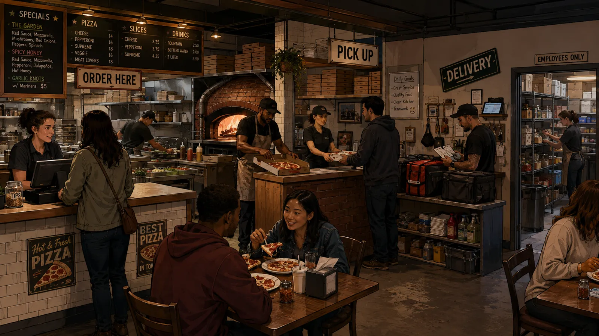
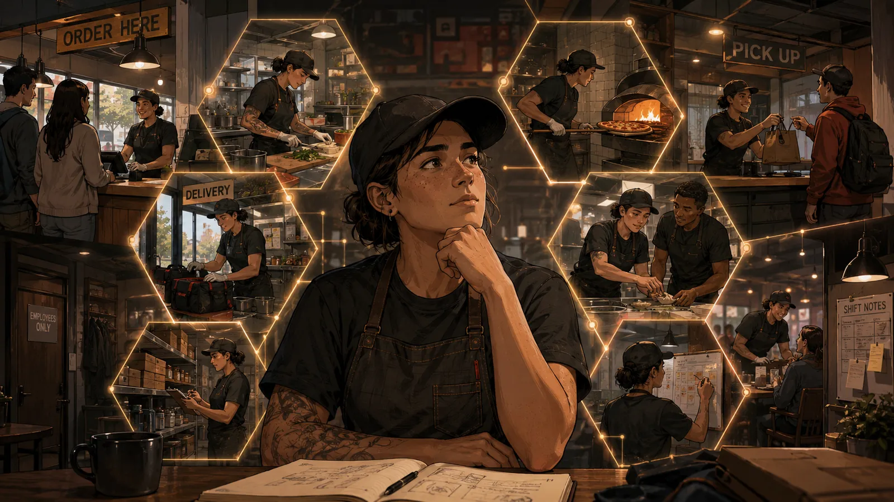
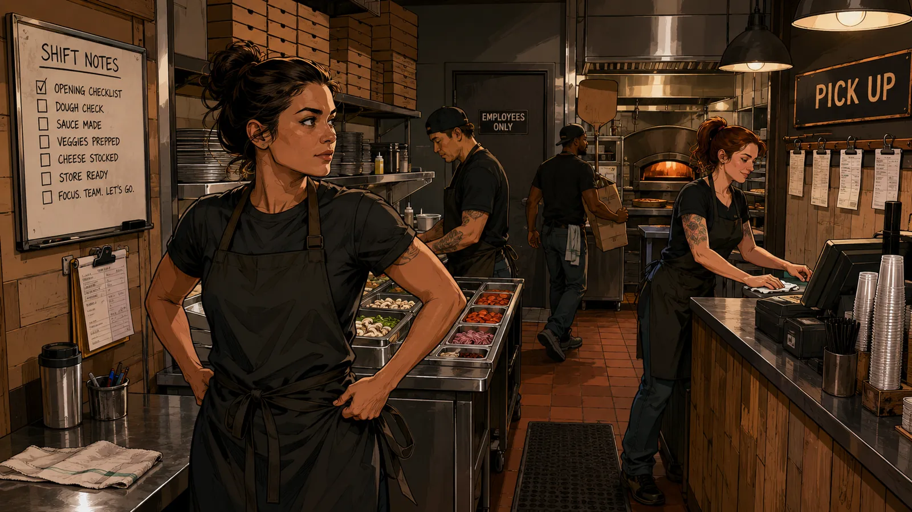

This module will not tell you what career to choose. It uses your O*NET interests and realistic workplace situations to help you notice how you think about work, what you already demonstrate, and which kinds of skills you want your next job to help you build.
Think of this as a career-preparation workout—not a career prediction. Your job is to notice yourself while you work through it.

Your O*NET results are a starting hypothesis about the kinds of activities that may interest you. We are going to test those interests in a workplace setting—not score them again.
You may discover that something you expected to enjoy feels different once it shows up in real work—or that an unexpected kind of problem grabs your attention.

Reliability, communication, accountability, adaptability, professionalism, and feedback are not career directions. They are foundational behaviors employers rely on across industries.

You do not have to love these behaviors. You do need to use them when the work requires them.
You will see eight restaurant situations: two connected to each of your top three O*NET interests, plus two intentionally different situations.
You can make a strong workplace decision and still decide you do not want more work like it. You can also struggle with a situation and realize you want to get better at it.
Your next job is another evidence point. Look for opportunities that let you practice the work patterns you want more of while continuing to build foundational skills.